Small trees, up to 8 m tall.
8 ಮೀ. ವರೆಗೆ ಬೆಳೆಯುವ ಸಣ್ಣ ಮರಗಳು.
8 മീറ്റര് വരെ ഉയരത്തില് വളരുന്ന ചെറുമരങ്ങള്
சிறிய மரம் 8 மீ. உயரம் வரை வளரக்கூடியது
Bark thin, brown, lenticellate; blaze greenish.
ತೊಗಟೆ ತೆಳುವಾಗಿರುತ್ತದೆ ಹಾಗೂ ಕಂದು ಬಣ್ಣ ಹೊಂದಿರುತ್ತದೆ ಮತ್ತು ವಾಯುವಿನಿಮಯ ಬೆಂಡುರಂಧ್ರ ಸಮೇತವಾಗಿರುತ್ತದೆ; ಕಚ್ಚು ಮಾಡಿದ ಜಾಗ ಹಸಿರು ಬಣ್ಣದಲ್ಲಿರುತ್ತವೆ.
ശ്വസനരന്ധ്രങ്ങളോട്കൂടിയ, തവിട്ട്നിറത്തിലുളള, നേര്ത്ത പുറംതൊലി; വെട്ട്പാടിന് പച്ചനിറം.
மெலிதான பட்டை, ப்ரவுன் நிறம், லெண்டிசெல்லேட்; உள்பட்டை பச்சை நிறம்.
Older branchlets lenticellate, young twigs covered by shiny peltate_scales.
ಬಲಿತ ಕಿರುಕೊಂಬೆಗಳು ವಾಯುವಿನಿಮಯ ಬೆಂಡುರಂಧ್ರ ಸಮೇತವಾಗಿ-ರುತ್ತದೆ. ಎಳೆಯ ಕಿರು ಕೊಂಬೆಗಳು ಹೊಳಪುಳ್ಳ, ಮಧ್ಯತೊಟ್ಟುಳ್ಳ ಶಲ್ಕೆಗಳಿಂದ ಅವೃತವಾಗಿರುತ್ತವೆ.
മൂത്ത ഉപശാഖകള് ശ്വസനരന്ധ്രങ്ങളോടുകൂടിയതാണ്, ഇളം തണ്ടുകള് തിളങ്ങുന്ന ശല്ക്കങ്ങള് നിറഞ്ഞതാണ്.
முதிர்ந்த கிளைகள் லெண்டிசெல்லேட்லேட் புதிய சிறுகிளைகளில் பளபளப்பான பெல்டேட் செதில்கள் உடையது.
Leaves simple, opposite, decussate; petiole 0.7-1.5 cm long, canaliculate above, peltate_scaly; lamina 4-10 x 2-4.5 cm, usually elliptic sometimes narrow obovate, apex acute to acuminate, base acute, margin revolute, coriaceous, peltate_scaly beneath; midrib canaliculate above; secondary_nerves 5-8 pairs, slightly impressed above; tertiary_nerves obscurely reticulo-percurrent.
ಎಲೆಗಳು ಸರಳವಾಗಿದ್ದು ಕತ್ತರಿಯಾಕಾರದ ಅಭಿಮುಖ ಜೋಡನಾ ವ್ಯವಸ್ಥೆಯಲ್ಲಿರುತ್ತವೆ; ಎಲೆ ತೊಟ್ಟುಗಳು 0.7 ರಿಂದ 1.5 ಸೆಂ.ಮೀ. ಉದ್ದವಿದ್ದು, ಮೇಲ್ಭಾಗದಲ್ಲಿ ಕಾಲುವೆಗೆರೆ ಸಮೇತವಾಗಿರುತ್ತವೆ ಹಾಗೂ ಮಧ್ಯ ತೊಟ್ಟುಳ್ಳ ಶಲ್ಕೆಗಳಿಂದ ಕೂಡಿರುತ್ತವೆ.ಪತ್ರಗಳು 4–10 x2 – 4.5 ಸೆಂ.ಮೀ. ಗಾತ್ರ ಹೊಂದಿರುತ್ತವೆ ಹಾಗೂ ಆಕಾರದಲ್ಲಿ ಸಾಮಾನ್ಯವಾಗಿ ಅಂಡವೃತ್ತ ಕೆಲವು ಸಂದರ್ಭದಲ್ಲಿ ಸಂಕುಚಿತವಾದ ಬುಗುರಿಯನ್ನು ಹೋಲುತ್ತವೆ, ಚೂಪಾದ ಎಲೆಬುಡ, ಹಿಂಸುರುಳಿಯಾಗುವ ಅಂಚು ಹೊಂದಿದ ಪತ್ರಗಳು ಕಾಗದವನ್ನೋಲುವ ಮಾದರಿಯವು ಮತ್ತು ತಳಭಾಗದಲ್ಲಿ ಮಧ್ಯತೊಟ್ಟುಳ್ಳ ಶಲ್ಕೆಗಳನ್ನೊಳಗೊಂಡ ಮೇಲ್ಮೈ ಹೊಂದಿರುತ್ತವೆ, ಮಧ್ಯ ನಾಳಗಳು ಪತ್ರದ ಮೇಲ್ಭಾಗದಲ್ಲಿ ಕಾಲುವೆಗೆರೆ ಸಮೇತವಿರುತ್ತದೆ; ಎರಡನೇ ದರ್ಜೆಯ ನಾಳಗಳು 5 ರಿಂದ ಜೋಡಿಗಳದ್ದು ಪತ್ರದ ಮೇಲ್ಭಾಗದಲ್ಲಿ ತುಸು ಅಚ್ಚೊತ್ತಿದಂತಿರುತ್ತವೆ; ಮೂರನೇ ದರ್ಜೆಯ ನಾಳಗಳು ಅಸ್ಪಷ್ಟವಾಗಿ ಜಾಲಬಂಧ ಹಾಗೂ ಎಲೆದಿಂಡಿಗೆ ಅಡ್ಡವಾಗಿ ಸೇರುವಂತಹ ಮಾದರಿಯವು.
സമ്മൂഖ ഡെക്കുസേറ്റ് ക്രമത്തിലുളള ലഘുപത്രങ്ങള്; ഇലഞെട്ടിന് 0.7 സെ.മീ മുതല് 1.5 സെ.മീ വരെ നീളവും മുകളില് ചാലോട് കൂടിയതുമാണ്; പെല്ട്ടേറ്റ് ശല്ക്കങ്ങള് നിറഞ്ഞതുമാണ്; പത്രഫലകത്തിന് 4 സെ.മീ മുതല് 10 സെ.മീ വരെ നീളവും 2 സെ.മീ മുതല് 4.5 സെ.മീ വരെ വീതിയും; സാധാരണയായി ദീര്ഘവൃത്താകാരം, ചിലപ്പോള് വീതികുറഞ്ഞ അപഅണ്ഡാകാരം, പത്രാഗ്രം കൂര്ത്തതോ ചെറുവാലോടുകൂടിയതോ, പത്രാധാരം കൂര്ത്തതാണ്, അരികുകള് ഉള്ളിലേക്ക് മടങ്ങിയിരിക്കുന്നു; 5 മുതല് 8 വരെ ജോഡികള്, മുകളില് ഒരല്പം തെളിഞ്ഞ് കാണാം; ത്രിതീയ ഞരമ്പുകള് അവ്യക്തമായ വിധത്തില് ജാലികാപെര്കറന്റ് ആണ്.
இலைகள் தனித்தவை, எதிரிலையடுக்கம், குறுக்குமறுக்கமானவை; இலைக்காம்பு 0.7-1.5 செ.மீ. நீளமானது, மேற்பரப்பில் கேனாலிகுலேட், பெல்டேட் செதில்களுடையது, இலை அலகு 4-10 X 2 - 4.5 செ.மீ., பொதுவாக நீள்வட்டம், சிலவற்றில் குறுகிய தலைகீழ் முட்டை வடிவம், அலகின் நுனி கூரியது முதல் வால் போன்று நீண்டது, அடிப்பகுதி கூரியது, அலகின் விளிம்பு பின்புறம் வளைந்து (ரெவலுட்) காணப்படும், கோரியேசியஸ், கீழ்பரப்பு பெல்டேட் செதில்களுடையது; மையநரம்பு மேற்பரப்பில் கேனாலிகுலேட்; இரண்டாம் நிலை நரம்புகள் 5-8 ஜோடிகள், மேற்பரப்பில் சற்று பள்ளமானது; மூன்றாம் நிலை நரம்புகள் வலைபின்னல் கொண்ட பெர்க்கரண்ட்.
Inflorescence compound umbel and corymbiform; flower white.
ಪುಷ್ಪಮಂಜರಿ ಸಂಯುಕ್ತ ಪೀಠಛತ್ರ ರೀತಿಯವು ಹಾಗೂ ನೀಳಛತ್ರ ರೂಪಿಗಳು; ಹೂಗಳು ಶ್ವೇತ ವರ್ಣದವು.
കുറച്ച് എണ്ണം മാത്രമായുണ്ടാകുന്ന, വെളുത്ത പൂക്കള് ബഹുഛത്ര മഞ്ജരിയിലാണ്, കോറിംബാകാരം.
மஞ்சரி கூட்டு அம்பல் மற்றும் கோரியம்ப், வெள்ளை நிறமான மலர்கள்.
Drupe, oblong-ellipsoid, peltate_scaly, 1 cm long; 1-seeded.
ಡ್ರೂಪುಗಳು ಚತುರಸ್ರ – ಅಂಡವೃತ್ತ ಕೆಲವು ವೇಳೆ ಸಂಕುಚಿತ ಬುಗುರಿಯಾಕಾರದವು. ಉದ್ದ 1 ಸೆಂ.ಮೀ. ನಷ್ಟಿದ್ದು ಮಧ್ಯದಲ್ಲಿ ತೊಟ್ಟುಳ್ಳ ಶಲ್ಕೆಗಳಿಂದ ಅವೃತ್ತವಾಗಿದ್ದು ಒಂದು ಬೀಜವನ್ನೊಳ-ಗೊಂಡಿರುತ್ತವೆ.
1 സെ. മീ നീളമുളളതും, ഒറ്റവിത്തോടുകൂടിയതും, ശല്ക്കങ്ങളോട് കൂടിയതുമായ ആഭ്രകം ആയത-ദീര്ഘഗോളാകാരത്തിലാണ്.
உள்ளோட்டுத்தசைகனி (ட்ரூப்), நீள்சதுரம்-நீள்வட்டம், பெல்டேட் செதில்களுடையது, 1 செ.மீ. நீளமானது, ஒரு விதை கொண்டது.

 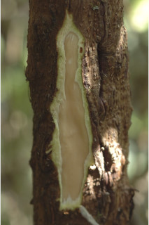
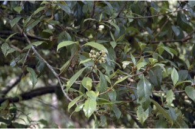
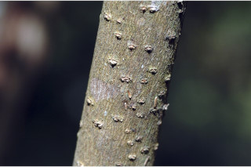
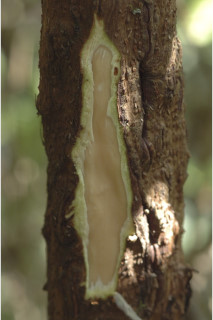
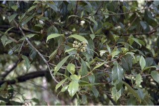
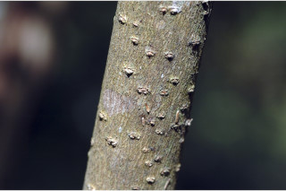


 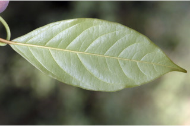
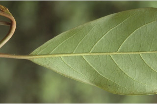
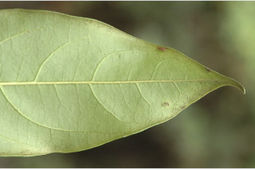
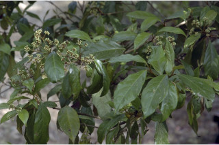
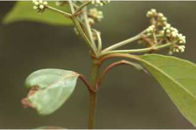
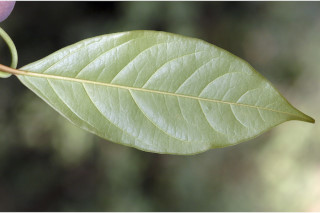
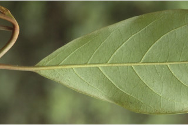
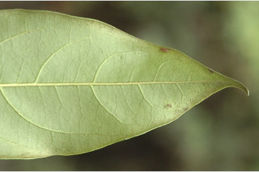
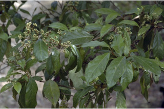
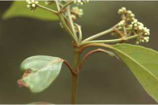

 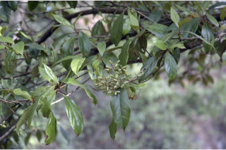
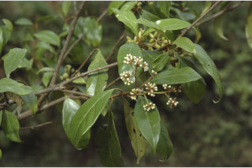
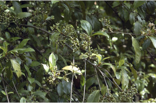
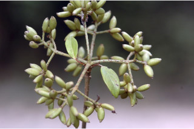
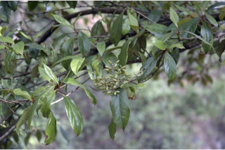
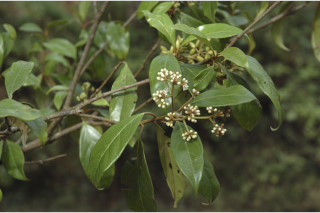
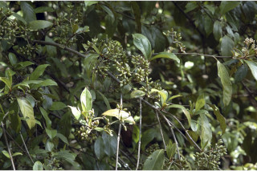
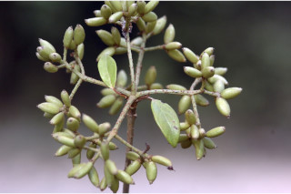